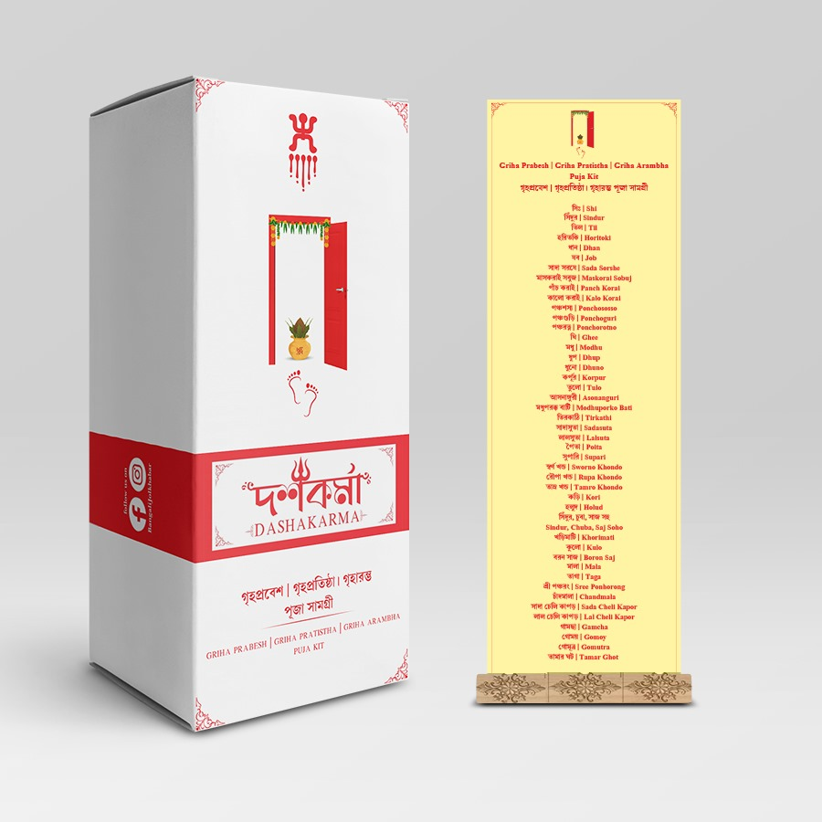

Satyanarayan Puja Kit
( 136 )
Dashakarma Satyanarayan Puja Kit - Complete with Kalash, Gangajal, prasad items—perfect for Satyanarayan vrata and home blessings.
Janmastami Puja Kit
( 142 )
Dashakarma Janmashtami Puja Kit - Includes Krishna idol essentials, bhog items, and puja samagri for a divine celebration of Lord Krishna's birth.

Ganesh Puja Kit
( 122 )
Dashakarma Ganesh Puja Kit - Eco-friendly Ganesh idol with durva grass, modak samagri—remove obstacles with tradition.

Laxmi Puja Kit
( 135 )
Dashakarma Lakshmi Puja Kit - Goddess Lakshmi's blessings in a box—sacred diya, coin, flowers, and all essentials for wealth & prosperity rituals.

Kartik Puja Kit
( 128 )
Dashakarma Kartik Puja Kit - Everything needed for Kartik Thakur puja—premium puja materials for devotion and tradition.
Basanti Puja Kit
( 250 )
Dashakarma Basanti Puja Kit - Dedicated to Maa Durga's Basanti avatar—includes spring flowers, sindoor, and essentials for spiritual renewal.
Saraswati Puja Kit
( 250 )
Dashakarma Saraswati Puja Kit - Includes white flowers, akshat, and books for seeking wisdom and success—ideal for students and artists.
Anaporna Puja Kit
( 250 )
Dashakarma Annapurna Puja Kit - Sacred grains and puja items to invoke Maa Annapurna's blessings for kitchen prosperity.

Jagadhatri Puja Kit
( 250 )
Dashakarma Jagadhatri Puja Kit - Power-packed kit with bhog, flowers, and worship items for invoking the protective power of Maa Jagadhatri.
Biswakarma Puja Kit
( 250 )
Dashakarma Vishwakarma Puja Kit - Tool puja essentials with decorations and incense—crafted for divine blessings in every workspace.

Griha prabesh Kit
( 250 )
Dashakarma Griha Prabesh Kit - Perfect for housewarming—includes vastu-friendly items, Kalash, and threshold puja essentials.

Hom Kit
( 250 )
Dashakarma Hom Kit - 27 types of herbal havan samagri and pure ghee for peace, purification, and powerful rituals.
Poite Puja Kit
( 250 )
Dashakarma Poite Puja Kit - Includes sacred thread, black sesame, and ritual items for the Upanayan or Poite ceremony.
Sradho Puja Kit
( 250 )
Dashakarma Shraddha Puja Kit - Complete pind daan & tarpan essentials—perfect for paying homage to ancestors with tradition.